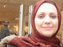

پذيرش > تریبون > گزارش كمپين > گزارشی از فعالیتهای کمپین در لوس آنجلس:کمپین مالک ندارد


 گزارشی از فعالیتهای کمپین در لوس آنجلس:کمپین مالک ندارد گزارشی از فعالیتهای کمپین در لوس آنجلس:کمپین مالک ندارد
8 مرداد 1386 - فریبا داوودی مهاجر - نسخه قابل چاپ
وقتی روجا دختر جوان ساکن لوس آنجلس برایم تعریف کرد که به همراه سایر دوستانش توانسته 700 امضا برای کمپین جمع کند و از فعالیتهایشان با انرژی و امید تعریف می کرد؛ باور کردم که به راستی کمپین نه تنها توانسته مرزها را طی کند بلکه موجب نزدیکی قلب ها و ایده های مختلف نیز شده است. کمپین توانسته شکاف نسلی جنبش زنان را به شکلی پر کند که اساسا قلب تصمیم گیری ها را متوجه جوانان نماید و با شور و شجاعت و نشاط این نسل هر روزبیش از پیش پویایی این حرکت اجتماعی را تضمین كند.
روجا 27 ساله است و دانشجوی دکترای مهندسی برق که 7 سال پیش به آمریکا آمده است. ایران را می شناسد و آداب آن را نفس کشیده است. حساس است و دغدغه ی بهبود وضعیت زنان را با هر جمله اش به من منتقل می کند.
روجا در جواب سوال من که چگونه با کمپین آشنا شدی می گوید: «از یک ایمیل ساده شروع شد. یکی از دوستانم برایم یک ایمیل فرستاد و یک لینک درباره ی کمپین که جدید و تازه و جالب بود. من اوایل وقت زیادی گذاشتم تا مطالب و مقاله ها و گزارش ها را بخوانم و درست تصمیم بگیرم.
روجا در جواب این سوال که چه نکته ای در کمپین نظر او را جلب کرد ادامه می دهد: «نویسنده ها باهوش و عاقل بودند. احساس می کردم ریشه ی مشکلات را درک کرده اند و بدون حاشیه درباره ی اصل و اساس مشکلات مطلب می نویسند. من که در لوس آنجلس با انواع و اقسام عقاید و مطالب روبرو هستم. با دقت روی این مقاله ها متوجه تفاوت های مطرح شده در کمپین شدم و بعد از طریق اورکات با دوستانم تماس گرفتم و شروع کردیم درباره ی کمپین حرف زدن و گفت و گو کردن. برای دوستانم هم متفاوت و جدید بود و با چندنفر دیگر تصمیم گرفتیم که در یک کافی شاپ همدیگر را ببینیم. در حالی که قبلا همدیگر را ندیده بودیم. جلسه اول فقط امید آمد و قرار گذاشتیم یک ویژن بنویسیم و مرتب مطالب را بخوانیم و پی گیری کنیم و روی دفترچه تمرکز بیش تری داشته باشیم. از آن به بعد جلسات تکرار شد و در جلسه سوم قرار گذاشتیم که از فامیل و دوستان به عنوان اولین حرکت 10 امضا جمع کنیم. من همان 10 امضا را جمع کردم و امید 25 امضا جمع کرد و کم کم بقیه هم به ما پيوستند و اينگونه بود كه ما تصميم گرفتيم با حضور خودمان کمپین را معرفی نماییم و امضا هم جمع کنیم.
اين دانشجوی جوان و عضو کمپین بهترین خاطره ی خودش را چنین عنوان می کند: «روز 13 بدر که همه ی ایرانی ها در پارک Orangcounty جمع شده بودند، همه کمک کردیم و بحث را راه انداختیم به شکلی که محفل گفتگو و بحث خیلی گرم بود. مادرها همه فعال شده بودند و با مردم حرف می زدند. بعضی ها می آمدند و برگه می گرفتند تا امضا جمع کنند. آن روز 500 امضا جمع شد.»
روجا چنین ادامه می دهد: «در حال حاضر یک سری دانشجو از دانشگاه های مختلف هستیم و اهداف را معین کرده ایم. در حال حاضر قرار گذاشته ایم با یک سری افراد مصاحبه کنیم و یک سایت هم درست کرده ایم. قرار است که در جشن پاییزی و جشن مهرگان، بحث های 13 بدر را تکرار کنیم. ما به دنبال هیاهو نیستیم و با سازمان های مستقل و حرفه ای که آن ها هم به دنبال هیاهو نیستند ارتباط می گیریم. سعی می کنیم با آرامش و پیوسته حرکت کنیم.»
وی در جواب این سوال که نقاط قوت کمپین را در چه شاخصه هایی ارزیابی می کند می گوید: «در کمپین مالکیت وجود ندارد و این نقطه قوت کمپین است و به همین دلیل هم به سرعت پیش می رود. نقطه قوت دیگرش بلوغی است که در آن به چشم می خورد. بلوغی که هیچ کسی را حذف نمی کند و به این نتیجه رسیده است که مذهبی ها، غیرمذهبی ها و هر گروه متفاوت دیگری می توانند روی مسائل زنان همکاری کنند و اهداف مشترک داشته باشند. به نظر من هر انسانی باید توانایی و انگیره داشته باشد که برای بهتر شدن آینده اش تلاش کند. افرادی که روی کمپین کار می کنند و یا امضا جمع می کنند فداکاری نمی کنند. همه ی ما برای خودمان تلاش می کنیم. برای آینده ی خودمان و باید هرجایی که هستیم در خانه یا دانشگاه، داخل یا خارج ایران تاثیر مثبت داشته باشیم و جامعه را بسازیم، چون دیگران برای ما ایران را نخواهند ساخت. باید از حرف زدن دست برداریم و عمل کنیم تا نتایج محسوس به دست بیاوریم. این که مرتب جمع شویم و بگوییم وضع زن ها بد است ولی هیچ کاری نکنیم اتفاقی نخواهد افتاد.
امید نیز یکی دیگر از بچه های کمپین است. وقتی تلفنی با امید حرف می زنم ته صدایش غنج می زند و پشت هم می گوید: به بچه ها سلام برسانید و تشکر کنید.
امید در جواب این که چرا به این حرکت جذب شدی می گوید: «مادر و خواهرم همیشه جلوی چشمم بودند. همیشه آن ها را می دیدم و بقیه خواهرها و مادرها و زن های کشورم که در لایه های مختلف اجتماع چقدر تنش دارند، تحت انواع و اقسام خشونت هستند، زندگی های پر از استرس که آرامش آنها را تحت الشعاع قرار داده است. این که چقدر مشکل دارند و آزادی شان با توجیه های مختلف سلب شده است. من همیشه آرزو داشتم و دارم که این زن ها را سرزنده و شاداب ببینم. من که در ایران بزرگ شده ام و این فرهنگ و آداب و رسوم را می شناسم و می دانم چقدر روی رفتارهای من به عنوان یک پسر تاثیر دارد. انتخاب ما آگاهانه نیست. اصلا انتخاب نیست. کارها و رفتارهایی را یاد می گیریم که می خواهند ما یاد بگیریم. البته این فرهنگ نکات مثبت زیادی هم دارد ولی برخوردش با خانم ها تنش های زیادی ایجاد می کند. من همیشه دنبال یک راه حل بودم تا وقتی که در اینترنت دوستانی پیدا کردم و راجع به این موضوع شروع کردیم به بحث و گفت و گو.
امید درباره ی این که چگونه عمل می کنند می گوید: «ما صحبت می کنیم و سعی می کنیم ایرانیان مقیم این شهر را حساس کنیم تا این قدر همه چیز را سیاه و سفید نبینند. فضای لوس آنجلس با ایران متفاوت است و ما می خواهیم این فضا را بشکنیم تا مردم به کمپین اعتماد کنند. سعی می کنیم از تجربیات آدم هایی که قبلا در حوزه های اجتماعی کار کرده اند یاد بگیریم.»
بچه های جوان لوس آنجلس با تشکیل یک هسته اولیه برای کمپین می خواهند که در سرنوشت خود موثر باشند. می خواهند نظر خودشان را درباره ی وضعیت زنان ایران با اقدام مناسب و موثر بیان کنند. تصدی گری را آفت حرکت می دانند و از حرکت های سلسله مراتبی تجربه خوبی ندارند. آنها می خواهند این جنبش همچنان مستقل بماند، خودی و غیرخودی نداشته باشد، همواره از درون نقد شود و همه با یکدیگر برابر باشند و اجازه ندهند که حرکت های فردی و منفعت گرایانه درون آن شکل بگیرد و یک بار دیگر تجربه ای تلخ از حرکت های اجتماعی را به کام مشتاقان بریزد.
ارسال به
بالاترین
،
توییتر
،
فریندفید
،
فیسبوک
در همين بخش :
 دهمین دورۀ مراسم تندیس صدیقه دولت آبادی ۱۳۹۲ دهمین دورۀ مراسم تندیس صدیقه دولت آبادی ۱۳۹۲
کارت پستالهایی به بهانهی هشت مارس و به یاد همهی مبارزین راه برابری
بیانیه بیش از 350 تن از مدافعان حقوق زنان به مناسبت روز جهانی زن؛ زنان هر روز فرودستتر میشوند
لباسی که برای تن ما دوخته اند! /اعظم بهرامی
چالشها و چشمانداز فعالیت مدنی زنان
ديگر بخش ها :
طرح یک میلیون امضا
|
مقالات
|
سایت نوشته ها
|
اخبار
|
گزارش كمپين
|
گفت و گو
|
علیه سکوت
|
كوچه به كوچه
|
نامه های شما
|
گزارش ویژه
|
گفتگو با اعضا
|
ویژه سالگرد کمپین
|
تصویر برابری
|
دل آرام علی
|
تریبون
|
مقالات
|
تاریخ شفاهی
|
خارج از چارچوب
|
کتابخانه
|
درباره کمپین
|
کمپین در شهرها
|
کمپین در بند
|
صدای تغییر
|
ویژه 22 خرداد
|
لایحه حمایت از خانواده
|
گالری
|
عشا مومنی
|
امیر یعقوبعلی
|
خدیجه مقدم
|
راحله عسگری زاده و نسیم خسروی
|
پروین اردلان،جلوه جواهری، مریم حسین خواه، ناهید کشاورز
|
زینب پیغمبرزاده
|
سعیده امین، سارا ایمانیان، محبوبه حسین زاده، ناهید کشاورز و همایون نامی
|
احترام شادفر
|
نسیم سرابندی زاده،فاطمه دهدشتی
|
وبلاگ مهمان
|
پرونده خرم آباد
|
دستگیری ها
|
مریم مالک
|
پرستو اللهیاری
|
مهرنوش اعتمادی
|
سمیه رشیدی
|
Other Languages
|
همراهان
|
«فراخوان کمپین ده روز با بهاره هدایت»
| English
|